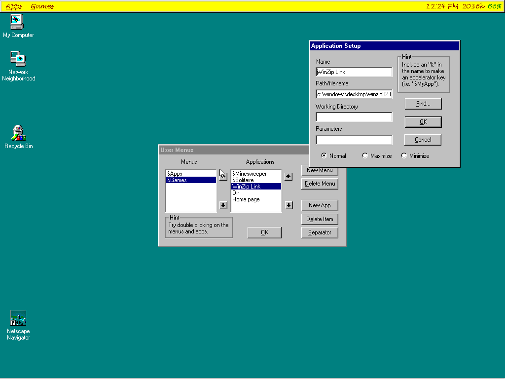
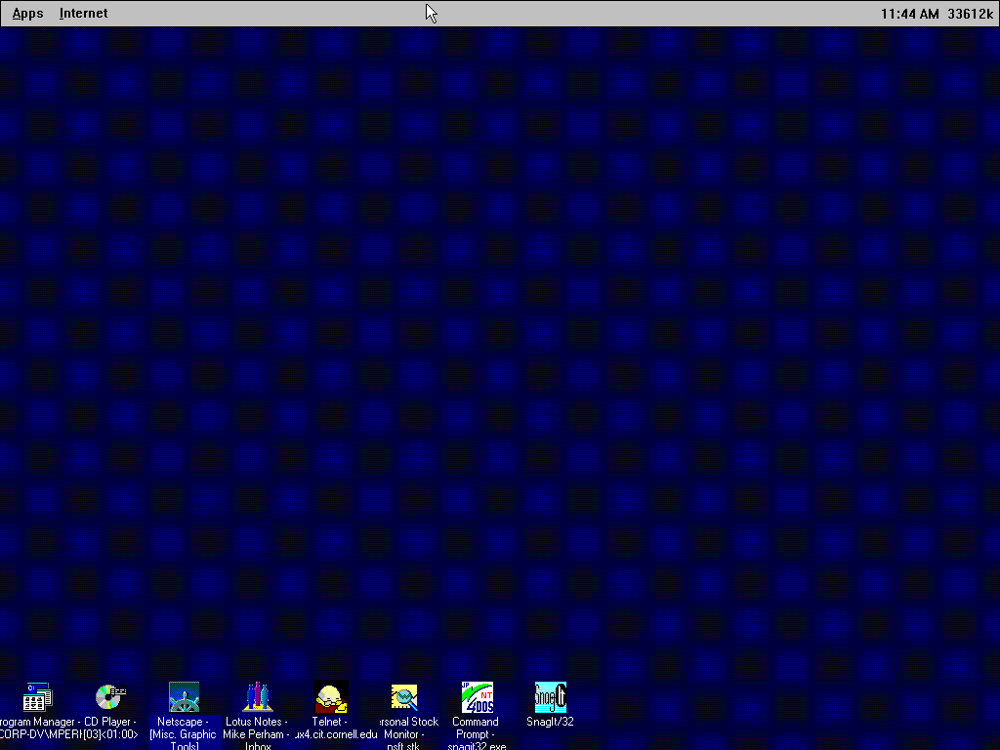

News
The v1.02 EXE had a bug in it due to a compiler bug in VC 4.2 (really!)
that caused AppBar to crash when using the Find... dialog due to a
corrupted stack frame pointer. This has been fixed and the zip file has
been updated.
AppBar v1.02 is now available below in Win95/WinNT English version
only. I do not plan on supporting foreign languages anymore. This version
lowers memory requirements a bit and works with IE 4.0.
AppBar v2.0 has been put on indefinite hiatus while I finish
my last semester here at Cornell and look for a job. The source
is currently about 50% done but will require several more weeks of
solid work to get compiling/working.
- Installation program
- Updated toolbar interface with icons
Please send me suggestions for additional features.
AppBar is a fast menuing system for Windows 95/NT. It stresses
simplicity and memory frugalness rather than OLE support. Even
the source is included in the package!
AppBar is officially freeware, which means it costs nothing to
everyone except for one change of my own: for-profit businesses must license
AppBar at a cost of $1/computer. Buying 100 licenses (i.e. $100)
gets you an unlimited license.
Screen shots
Windows 95
(note battery life %) |
Windows NT v3 |
|  |
 |
AppBar 1.02
AppBar 1.00 with Source
AppBar 1.00 for NT3
AppBar 1.00 (German)
AppBar 1.00 for NT3 (German)
A Japanese language kit has been
prepared. No support will be given for this. You must have MSVC
4.x and know how to compile.
I'd like to download an ancient
version of AppBar to see how much things have changed since the start.
AppBar 1.02
- Fixed bug with IE 4.0.
- Lowered memory requirements a bit
AppBar 1.00
- Rewrite using MFC 4.0
- Conversion utility for 0.99->1.00 datafiles (now
available below)
- German language version
- Hotkey (Ctrl-Alt-Z)
- User and time display options
- Exit AppBar with a Left button DoubleClick (already in
0.99)
AppBar 0.99
- Expanded parameters field from 30 to 90 characters.
*REQUIRES* you to delete your current datafile.
Go here for a conversion
utility that will update your datafile.
- Windows NT executable support
- Several small bug fixes
- Start apps min/max/normal
- Run shortcuts/links
AppBar 0.98
- Source included in archive.
- Bug fixes for Drag n' Drop and AutoHide.
- Autohide now slides if you have that enabled.
- Command line switches for the other options.
AppBar 0.97
- Right button popup menu instead of the swirl menu
- AppBar can be placed at the top or bottom of the screen
- Start Menu features!!! Auto-hide, Always On Top, etc.
AppBar 0.96
- HUGE bug fix for the File I/O routines
- Drag and drop - you can now drop an EXE onto a menu in
the Edit dialog and it will add it to the apps.
- A bit more internationally friendly for our friends
across the seas!
AppBar 0.95
- Command-line arguments
- Multi-user settings via command-line
- Laptop aware (battery percentage displayed)
- Date and memory usage displays
AppBar v0.94
- Move buttons have bitmaps now
- Bug fix for find button
- Maximize aware when stay-on-top
- Separators in menus
AppBar v0.93
- Find button for executable and WAV file so you don't have
to type
- Options stored in Registry rather than INI file
- Empty menu bug fixed
 Mike Perham
Mike Perham
{kind=link}
{kind=link}